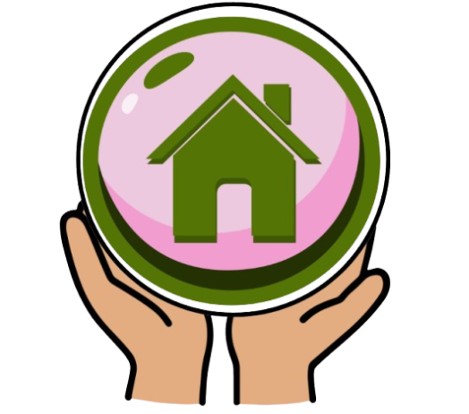

WebGIS RTLH
Cari
Kembali ke Preview
Layer
Persebaran RTLH
Ikon rumah merah (solid)
Batas Kecamatan
Pola Ruang
Basemap
Citra Satelit (Mapid)
OpenStreetMap
Legenda
RTLH (Rumah)
Ikon rumah, merah solid
Garis batas (dash)
Pola Ruang
Info Layer
Klik fitur di peta untuk melihat info.